[Index] [1] [2] [3] [4] [5] [6] [7]
This chapter assumes that you have installed HDFView and, with Chapter 3, The HDF Object Model, is designed to help you get to the point where you are actually looking at HDF datasets.
When you first open HDFView, the HDFView window appears with an empty tree and data panel. After you open an HDF file, the structure of the file is displayed in the Tree Panel. The content of a data object is displayed in the Data panel by opening the data object.
The main window consists of five components: Menubar, Tool bar, File bar, Tree panel, Data Panel, Info panel.
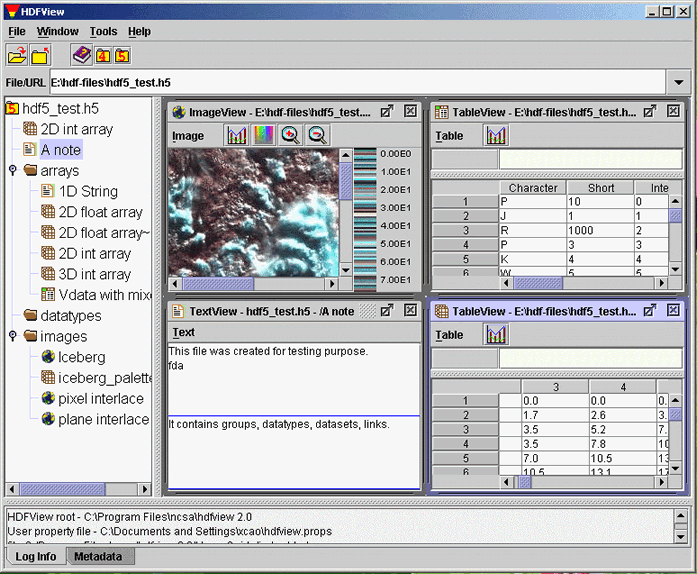
The Main Window
The menubar is at the top of the main window. You can select a menu command from menu items or press key combination from keyboard to invoke the menu item's action without navigating the menu hierarchy. For example, to exit the HDFView, you can either press "Ctrl+Q" from the keyboard or select Exit item from the File menu.
File menu
File menu contains commands to open/close files, create and save files, and
exit the HDFView. It also displays a list of most recent files for quick
reopen.
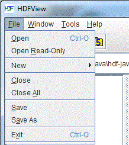
File Menu
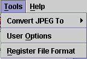
Tools menu
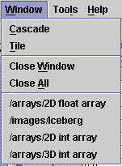
Window Menu
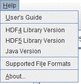
Help Menu
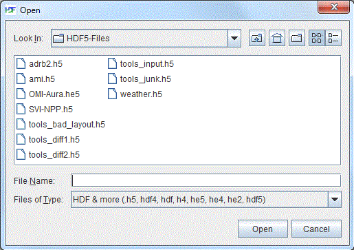
Local file manager (Windows)
An HDF file contains one or more objects, optionally grouped in a hierarchy. For general information about the structure and contents of HDF files, see the HDF documentation at /HDF5/doc/ and /doc.html.
The structure of the file is displayed in the Tree panel on the left. Data objects are represented as icons, groups are represented by folders. An HDF file may contain groups, dataset (arrays), named datatypes and links.
The hierarchy of the file can be navigated by selecting folders to "open" a group, which displays the objects contained by the group. When an object is selected, the data is displayed appropriately in the data panel on the right.
You can open multiple files at one time. Files are listed as root objects in the tree. The following figure illustrates that an HDF4 file, annras.hdf, and an HDF5 file, hdf5_test.h5, are currently open.
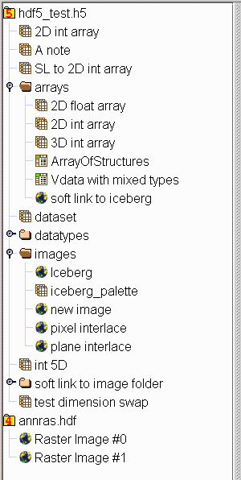
Tree view
Short status information and feedback messages are displayed in the Status Bar. The information and message show the result of user actions.
To see the metadata of a data object, you click the right button of the mouse on the data object. The metadata dialog pops up with metadata information such as name, type, attributes, data type, data space, and members.
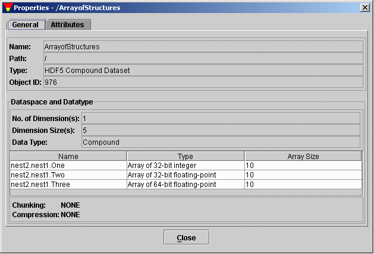
General Properties of Dataset
To view user block in text, right-click the file node (the root group) to popup the metadata dialog. Click the "User Block" tab in the metadata dialog to show the user block information in text.
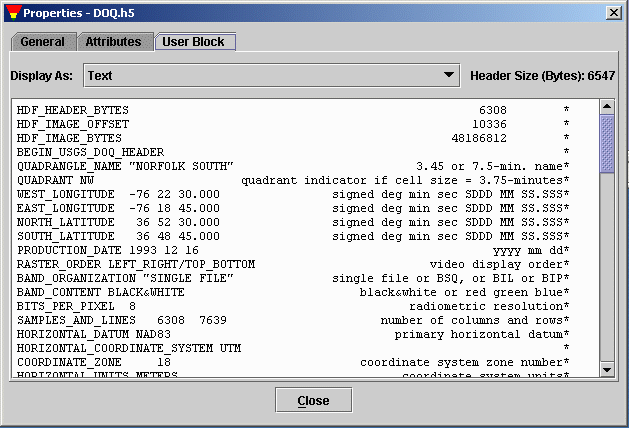
General Properties of Dataset
HDFView displays data with default GUI module when openning dataset by default. You can set default modules from "Tools" --> "User Options" --> "Default Module". Change of default TreeView will take effect only after you restart the HDFView.
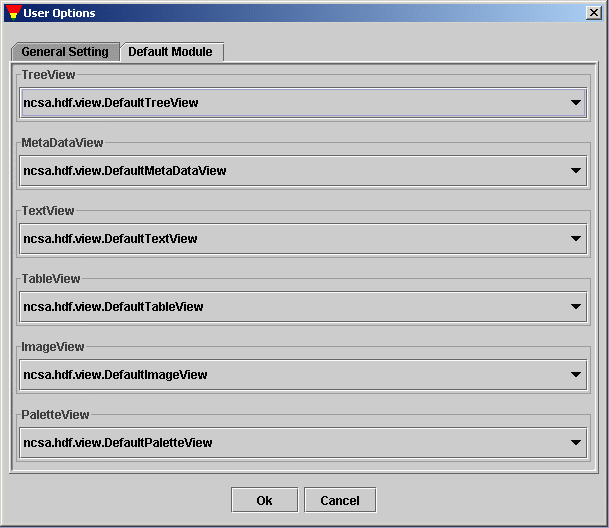
Set Default Modules
By default, data or attribute is displayed with default modules. You can also select specific module for display. To select a module, use "Open As" option from the popup menu to choose opotional TableView or ImageView. Use "Show Property As" to choose a MetadataView.
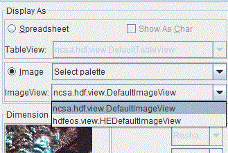
Select an ImageView
[Index] [1] [2] [3] [4] [5] [6] [7]